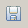
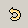
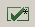
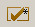
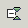
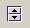

Use the New button (or select File->New) to create a new XML file. The New XML Document dialog is displayed.

Use the Open button (or select File->Open) to open an existing XML file. A File Chooser dialog is displayed.

Use the Open Remote button (or select File->Open Remote) to open a remote file using HTTP (or HTTPS). An Open Remote Document dialog is displayed.

Use the Save button (or select File->Save) to save a document to disk.

Use the Save As button (or select File->Save As) to save a newly created document to disk. A File Chooser dialog is displayed.

Use the Save Remote Document button (or select File->Save As Remote) to save a newly created document to a remote location. A Save Remote Document dialog is displayed.

Use the Print button (or select File->Print) to print the active document. The Print dialog is displayed where print preferences, page ranges, etc. can be set.

Use the Undo button (or select Edit->Undo) to reverse the last edit. Undo can be used repeatedly to rollback a number of changes.

Use the Redo button (or select Edit->Redo) to reverse the last Undo operation. Redo can be used repeatedly to rollback a number of Redo operations.

Use the Cut button (or select Edit->Cut or use the key combination Ctrl-X) to cut the current selection so that it can be moved to another location.
Use the Copy button (or select Edit->Copy or use the key combination Ctrl-C) to copy the current selection so that it can be pasted to another location.

Use the Paste button (or select Edit->Paste or use the key combination Ctrl-V) to paste content that has previously been Cut or Copied.

Use the Find button (or select Edit->Find or use the key combination Ctrl-F) to display the Find dialog. This allows the user to specify the search string, choose to Match Case (by default, No) and specify that the search string is a Regular Expression (by default, No) and the direction of the search (by default, Down).

Use the Find Next button (or select Edit->Find Next or use the function key F3) to repeat the current search.

Use the Replace button (or select Edit->Replace or use the key combination Ctrl-H) to display the Replace dialog. This allows the user to specify the search string, choose to Match Case (by default, No), specify that the search string is a Regular Expression (by default, No), the direction of the search (by default, Down) and the replacement string.

Use the Validate button (or select XML->Validate) to validate the active document. The document is validated against the appropriate schema as defined in the document, or as set with Schema->Validation..., or set using Schema->Open Schema with validation turned on or as specified in the associated Type. If no grammar has previously been set, the user is prompted to enter one in the Set Validation Grammar dialog.

Use the Well-Formed button (or select XML->Check well-formedness) to see if the active document is well-formed XML.

Use the Expand All Nodes button (or select View->Execute All) to expand nodes in the Schema Viewer or the document tree View.

Use the Collapse All Nodes button (or select View->Collapse All) to collapse nodes in the Schema Viewer or the document tree View.

Use the Split Windows Horizontally button (or select View->Split Horizontally) to view multiple files simultaneously on top of one another.

Use the Split Windows Vertically button (or select View->Split Vertically) to view multiple files simultaneously side-by-side.

Use the Unsplit Windows button (or select View->Unsplit) return to the pre-split display.

Use the Execute Scenario button (or select Transform->Execute Scenario) to execute the default transformation scenario, if one has been specified in the Type definition for the active document. If no default has been specified, then a list of scenarios is displayed - double-click on the name of the desired scenario to execute it. If no transformation scenarios has been created, then the Transform button will be inactive.

Use the Debug an XSLT Transformation button (or select Transform->XSLT Debugger) to start the XSLT Debugger.